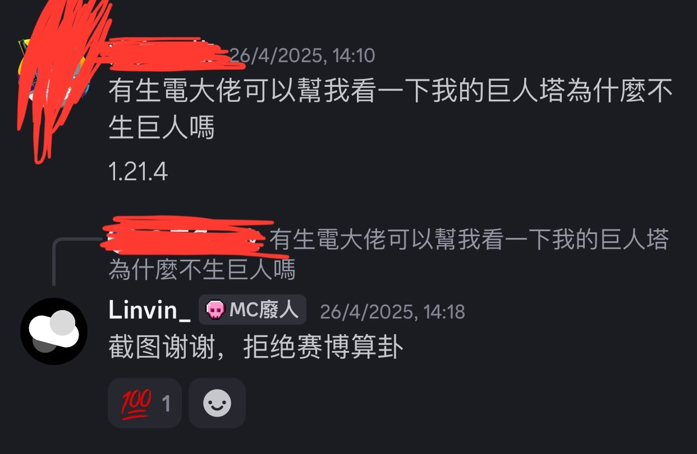

如何向tmc社区提问？
--------如何提问--------
作者：Linvin -by 2025.06.27
作者：Linvin -by 2025.06.27
正如上一页，我们已经确定自己的环境，现在就看自己遇到的问题。
首先，先让我们看一个错误提问例子
可以看到，只是说了自己的机器不能用，并没有给其他信息
而大佬需要的是大量有用的信息，而非一句不能用
所以在提问前，请先检查一下你是否提供了所有信息
原版的定义是：不修改游戏内容
也就是说优化模组可以被接受，但是不是全部。如：c2me
反正你只需要知道，开源的优化模组都是不修改游戏内容的